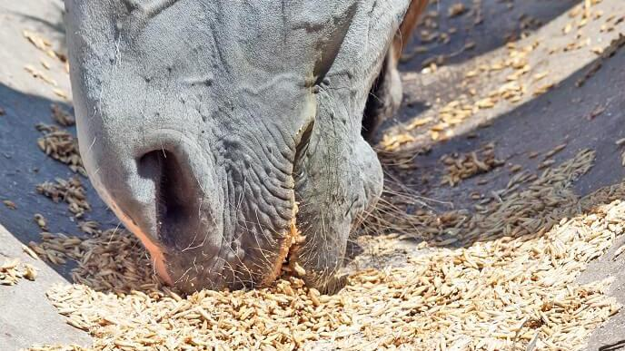

Das Kraftfutter
Kraftfutter wie zum Beispiel Hafer, Mais oder Gerste, brauchen vor allem Pferde, welche harte Arbeit leisten müssen. Es dient als Energiezufuhr, sollte jedoch nicht als Hauptnahrungsmittel für Pferde verwendet werden. Kraftfutter sollte über den ganzen Tag verteilt, immer in ganz kleinen Mengen gefüttert werden.
